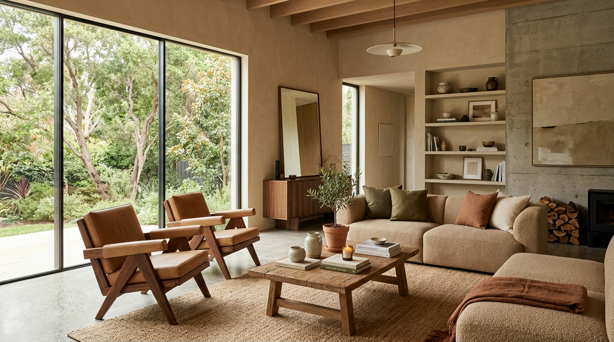
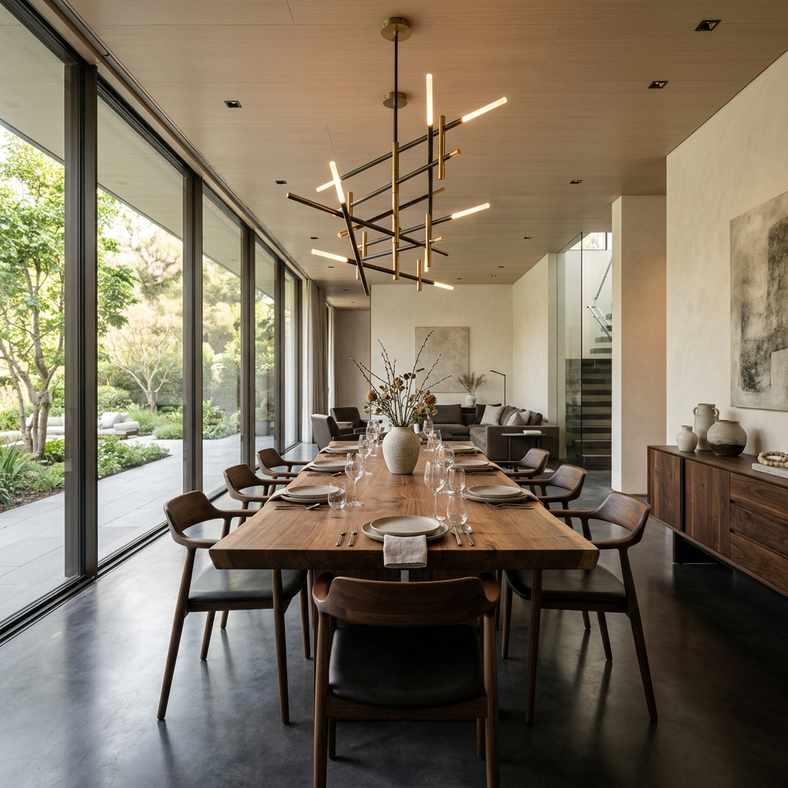
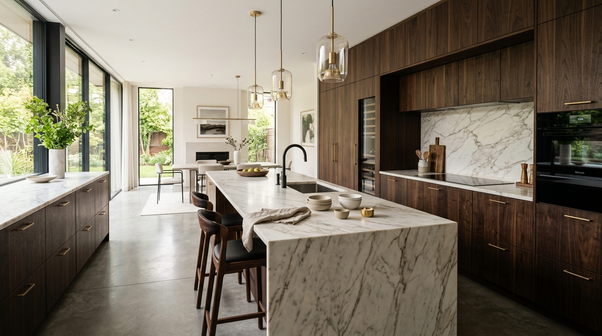
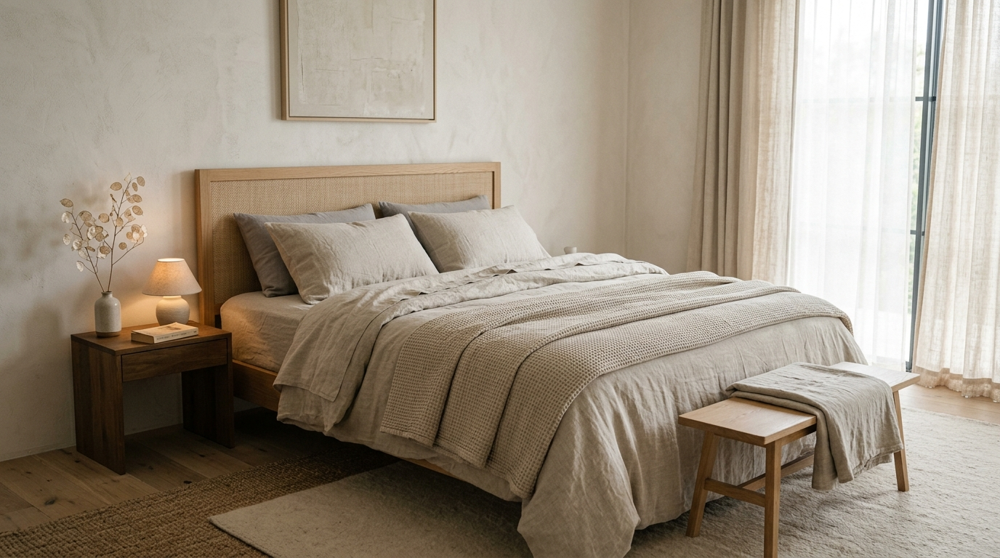
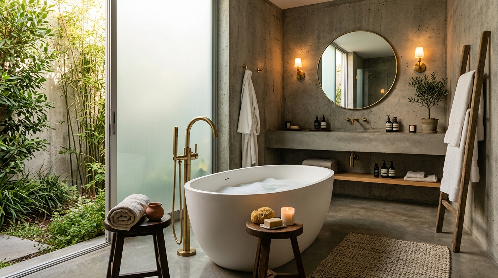

SELECTED WORKS
The Morphing House

A conceptual exploration of spatial transformation. In this interactive virtual tour, we designed a space that seamlessly morphs between different functions—from a cozy living room to a sleek kitchen, a grand dining room, a serene bedroom, and finally a luxurious spa bathroom.
Click the interactive tour above to scroll through the fluid transitions of these spaces, rendered with photorealistic precision to demonstrate our mastery of varied design languages within a single continuous environment.
The Minimalist
A complete gut renovation of a pre-war Manhattan loft. The client, a contemporary art collector, requested a serene, minimalist retreat that honors the building's industrial roots while introducing modern luxury. We stripped the space back to its raw concrete shell and introduced warm woods, soft linens, and bespoke lighting fixtures to create a gallery-like yet deeply comfortable home.
The open-plan living area features custom built-in cabinetry that hides all technology and clutter, ensuring the art pieces remain the focal point. Natural light was maximized by removing non-structural walls and utilizing sheer, automated window treatments.


Urban Sanctuary

Designed for a busy executive, this multi-story Brooklyn townhouse was transformed into a quiet refuge from the chaotic city outside. Our design language focused on tactile, natural materials—honed limestone, brushed brass, and dark walnut—to create an atmosphere of total relaxation and grounding.
The master suite was entirely reconfigured to include a spa-like bathroom that acts as a wet room, seamlessly integrating the sleeping and bathing areas. Ambient, architectural lighting replaces harsh overheads, allowing the mood of the room to shift effortlessly from day to night.
